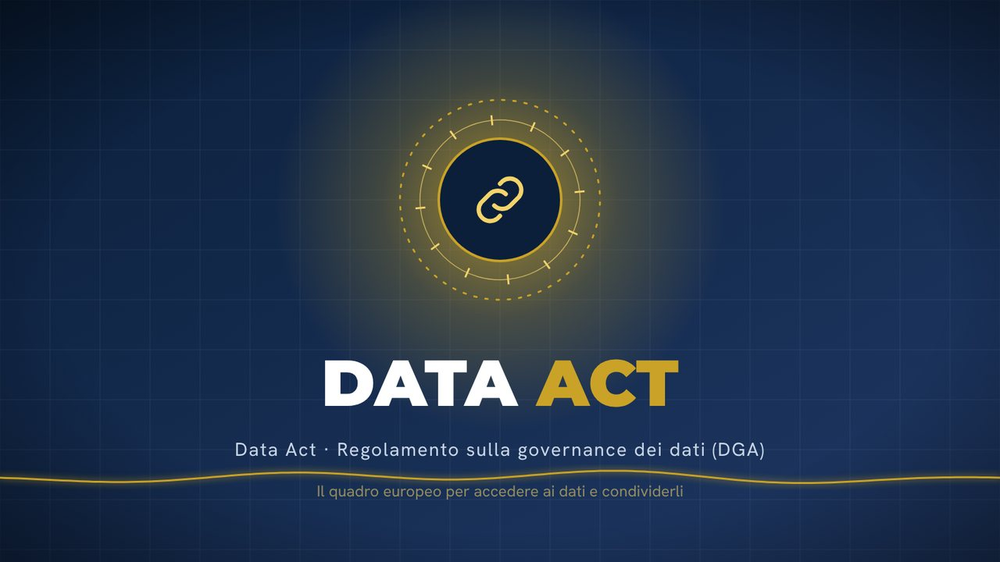

ARG
ARGARGOS › La normativa in 4 minuti › Data Act e DGA
Data Act e DGA in 4 minuti: Italia: obbliga, ma manca chi vigila
Il Data Act e il regolamento sulla governance dei dati sono il quadro europeo per accedere ai dati e condividerli. Il dato industriale non appartiene più, per default, al produttore. In Italia il regolamento obbliga, ma manca chi lo vigili.

- 0:00Di chi sono?
- 0:13Il regolamento
- 0:32In Italia
- 0:51Data Act
- 1:03Obblighi
- 1:25Il DGA
- 1:42Date
- 2:03Europa
- 2:25Il giudice
- 2:43Cosa fare
Dati chiave
- 12.9.2025 in tutta l'Unione europea
- 24.9.2023 si applica il DGA
- 12.9.2025 si applica il Data Act
- 12.9.2026 accesso fin dalla progettazione
- 12.1.2027 stop ai costi per cambiare cloud
- Nessuna autorità Competente designata
- Nessuna sanzione Regime nazionale assente
- Garante Solo dati personali
Trascrizione
Testo completo della voce narrante
0:00 · Di chi sono?
Il tuo trattore produce dati. Le tue macchine, anche. Il tuo ascensore, la tua auto, il tuo contatore. Ma i dati li tiene il produttore. Di chi sono, davvero?
0:13 · Il regolamento
Il regolamento europeo sui dati, il Data Act, si applica in tutta l'Unione dal 12 settembre 2025. Chi usa un prodotto connesso può accedere gratis ai suoi dati, e condividerli. E dal 12 gennaio 2027 nessun fornitore cloud potrà far pagare l'uscita.
0:32 · In Italia
In Italia il regolamento obbliga, ma manca chi lo vigili. Nessuna autorità competente designata. Nessun regime sanzionatorio nazionale. Il Garante vigila solo sui dati personali. I diritti si possono già far valere davanti al giudice. E per il Data Governance Act l'autorità è l'AgID.
0:51 · Data Act
Il Data Act e il regolamento sulla governance dei dati sono il quadro europeo per accedere ai dati e condividerli. Il dato industriale non appartiene più, per default, al produttore.
1:03 · Obblighi
Cosa chiede al produttore. Progettare il prodotto perché l'utente acceda ai suoi dati. Informare prima del contratto su quali dati produce. Condividerli con il terzo scelto dall'utente, a condizioni eque. E proteggere i segreti commerciali con misure concordate. I dati non personali, solo come concordato con l'utente.
1:25 · Il DGA
Il regolamento sulla governance dei dati completa il quadro. Riuso dei dati pubblici protetti. Intermediari di dati neutrali e registrati. E altruismo dei dati, per l'interesse generale. L'Omnibus digitale propone di integrarlo nel Data Act.
1:42 · Date
Le date. 24 settembre 2023: si applica il regolamento sulla governance dei dati. 12 settembre 2025: si applica il Data Act. 12 settembre 2026: accesso fin dalla progettazione. E 12 gennaio 2027: stop ai costi per cambiare cloud.
2:03 · Europa
In Europa la mappa è diseguale. Germania: oltre 700 reclami. Paesi Bassi: legge e autorità. Danimarca: sanzioni solo dai giudici. Francia: uscita dal cloud a zero euro. Il Belgio prepara la sua autorità. E Spagna, Portogallo e Italia sono ancora senza autorità.
2:25 · Il giudice
In Italia, intanto, finché manca l'autorità, il giudice fa da regolatore. L'utente che non riceve i dati può rivolgersi al tribunale. Gli spazi di dati permettono di condividere senza spostare i dati. E chi vende in Germania risponde già a un regolatore con poteri sanzionatori.
2:43 · Cosa fare
Cosa fare adesso. Schede per prodotto, una procedura di accesso, contratti equi e un piano di uscita dal cloud. ARGOS verifica che l'accesso funzioni davvero, con test sui sistemi reali e prove per il cliente, o per il giudice. Data Act: i dati al servizio di chi li produce.
Domande frequenti
Che cos’è Data Act e DGA?
Il Data Act e il regolamento sulla governance dei dati sono il quadro europeo per accedere ai dati e condividerli. Il dato industriale non appartiene più, per default, al produttore. Il regolamento europeo sui dati, il Data Act, si applica in tutta l'Unione dal 12 settembre 2025. Chi usa un prodotto connesso può accedere gratis ai suoi dati, e condividerli. E dal 12 gennaio 2027 nessun fornitore cloud potrà far pagare l'uscita.
Che cosa richiede Data Act e DGA?
Cosa chiede al produttore. Progettare il prodotto perché l'utente acceda ai suoi dati. Informare prima del contratto su quali dati produce. Condividerli con il terzo scelto dall'utente, a condizioni eque. E proteggere i segreti commerciali con misure concordate. I dati non personali, solo come concordato con l'utente.
Quali sono le date chiave?
Le date. 24 settembre 2023: si applica il regolamento sulla governance dei dati. 12 settembre 2025: si applica il Data Act. 12 settembre 2026: accesso fin dalla progettazione. E 12 gennaio 2027: stop ai costi per cambiare cloud.
Qual è la situazione in Italia?
In Italia il regolamento obbliga, ma manca chi lo vigili. Nessuna autorità competente designata. Nessun regime sanzionatorio nazionale. Il Garante vigila solo sui dati personali. I diritti si possono già far valere davanti al giudice. E per il Data Governance Act l'autorità è l'AgID. In Italia, intanto, finché manca l'autorità, il giudice fa da regolatore. L'utente che non riceve i dati può rivolgersi al tribunale. Gli spazi di dati permettono di condividere senza spostare i dati. E chi vende in Germania risponde già a un regolatore con poteri sanzionatori.
Che cosa deve fare un’impresa adesso?
Cosa fare adesso. Schede per prodotto, una procedura di accesso, contratti equi e un piano di uscita dal cloud. ARGOS verifica che l'accesso funzioni davvero, con test sui sistemi reali e prove per il cliente, o per il giudice. Data Act: i dati al servizio di chi li produce.
Fonti ufficiali
- Regolamento (UE) 2023/2854 (Data Act) (EUR-Lex)
- Regolamento (UE) 2022/868 (DGA) (EUR-Lex)
- Schede normative di Software in a Box
Continua con
 Qualificazione ACN e ISO
Qualificazione ACN e ISOQualificazione ACN e ISO in 4 minuti: Una prova non è un modulo
 GDPR
GDPRGDPR in 4 minuti: Si sanziona soprattutto l'essenziale
 EHDS
EHDSEHDS in 4 minuti: Per ospedali e produttori
Voce e musica generate con intelligenza artificiale (art. 50 del regolamento sull’IA). Informazione generale, non costituisce consulenza legale; situazione a novembre 2026, secondo le schede normative di Software in a Box. Clip video su licenza Envato.
Per inserire questa presentazione in un altro sito: <iframe src="https://argos.softwareinabox.eu/it/normativa/data-act-dga/presentacion/?embed=1" width="960" height="540" allow="autoplay; fullscreen" title="Data Act e DGA in 4 minuti: Italia: obbliga, ma manca chi vigila"></iframe> con un link a questa pagina.
Disponibile anche in: EspañolDeutschFrançaisFrançais (Belgique)NederlandsNederlands (België)PortuguêsDansk